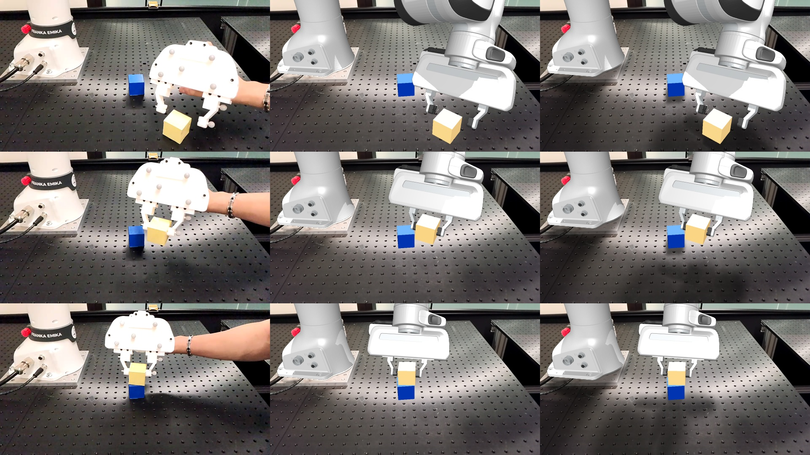

CSC2626 course project, University of Toronto
Human video to robot policy.
A person stacks two cubes in front of one fixed Magic Leap 2. Every frame is rebuilt with a Franka in the person's place, then used to train a policy.
Swipe sideways for the other two views.
From a headset recording to a policy.
Eight steps, in the order they run. The project replicates HumanEgo with a Magic Leap 2 in place of Aria glasses.
Record
A demonstrator stacks a yellow cube on a blue cube with a handheld, marker-tracked gripper. A Magic Leap 2 fixed in front of the workspace records RGB, depth and infrared. 57 demonstrations, 25,734 frames, 124.9 GB, downloaded and hash-verified.
One background, no SLAM
The headset moves less than 2 mm across the recordings, so no SLAM is needed. One clean, shadow-free background is built from all trials.
Gripper pose
Solved from the infrared markers, with a median reprojection error of 0.3 px. The jaw opening comes from the finger markers.
Cube poses
Measured from depth, then locked to the real pixels. The carried cube is about 3 px off (median) in a 640 px image; resting cubes are at 0 px.
Robot placement
The real Franka base is registered from depth, so the virtual Franka stands where the real one does. Inverse kinematics is solved for every pose (worst error 0.2 mm), with a hard constraint that the robot stays at least 2 mm above the table.
Reconstruction
Every frame is rebuilt: the clean background, the cubes, a rendered Franka, and cast shadows whose light direction is fitted to the real cube shadows.
Digital twin
A MuJoCo scene with the same robot placement, table, cubes with physics, and a camera with the Magic Leap intrinsics. Replayed through the physics, 55 of 57 demonstrations stack, including all 43 used for training. The two failures have recorder frame drops longer than 1 s.
Policy
The upstream HumanEgo flow-matching transformer, 15.2 M parameters. It reads three state tokens and one 320×192 image and predicts 50 future hand poses. Trained on 43 episodes.
The same frame, with a robot in it.
Three moments of a demonstration. Without shadows the arm floats; with a light direction fitted to the real cube shadows it sits on the table.

Run the policy yourself.
Put the two cubes where you like and press Run. The learned policy does the rest, live, in the simulator.
The simulation runs on one desktop computer, for two visitors at a time. The policy only knows the part of the table the demonstrations covered, so the cubes stay inside it, and it does not succeed from every placement.
Every trial, open to inspect.
The Stack Data Studio holds the recorded trials: the video, the 3-D scene, the measured errors, and the reason each excluded trial was excluded.
What works, and what does not yet.
Works
- The data pipeline, end to end. 57 recordings go in; 44 come out ready. 13 are excluded: 7 for recorder frame drops, 5 because the cube does not line up with the pixels, 1 incomplete.
- Physics replay. 55 of 57 demonstrations stack when replayed in the MuJoCo twin, including all 43 training episodes.
- Reconstruction. Ready trials are rebuilt frame by frame with a Franka and fitted shadows.
Not yet
- The policy does not complete the stack. In closed loop in the simulator the 6,000-step policy stacks 4 of 6 held-out starts when each plan is the mean of 8 samples, and 0 of 6 with a single sample. In the live scene above it stacked 5 of 12 runs. Expect it to miss often.
- Cause under investigation. Single policy samples scatter by about 15 mm even on training data. Longer training and sample averaging are being tested.
- No real-robot rollout has been run.
- The robot-to-camera transform is not a hand-eye calibration. It is a depth-based registration with about 1° of uncertainty.
Course project for CSC2626 at the University of Toronto, developed in the STARS Lab repository utiasSTARS/HumanEgoMagicLeap, which is private. It replicates HumanEgo (Wang et al., 2026, arXiv:2605.24934) with a Magic Leap 2 in place of Aria glasses.
Every number on this page comes from the recorded data or the simulator. Nothing has been run on the real robot.